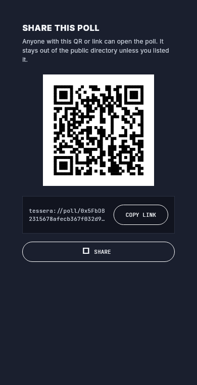
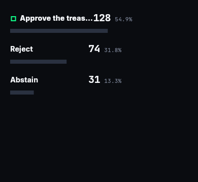

Open-source · self-hostable · no wallet
Group decisions everyone can check — not just believe.
A self-hosted verifiable bulletin board for group decisions: anonymous-yet-eligible ballots, a tally anyone can recompute, and a history you can prove wasn’t altered.
Tessera is a small, open-source tool a community runs on its own server. It collects ballots into a public, append-only log, hands each voter a receipt, and pins the record to a host-independent anchor. Anyone—voter, organiser, or a complete stranger—can re-add the votes and confirm the published result is the one the ballots actually produce.
The problem
A vote is only as good as the trust in whoever counted it.
A club, a co-op board, a student union, a DAO working group—they all hit the same wall. Someone runs the vote. Everyone else has to take that person’s word for the result. Did every ballot count? Was anything quietly added, dropped, or re-tallied after the fact? You usually can’t tell.
The usual fixes each fail somewhere. A show of hands isn’t secret. A Google Form is either named (not anonymous) or open (not eligibility-gated), and only the owner sees the raw responses—so only the owner’s tally exists. A blockchain election is heavy, expensive, and solves a scale problem most groups don’t have.
What groups actually need: a result everyone can independently check is honest—without having to trust the organiser, the host, or any service run by someone else.
Tessera is built for that one job. It is a trust tool, not a scale tool.
How it works
An append-only ballot log, anonymous credentials, and a public anchor.
Three plain pieces, no jargon required to use it:
- 01 Anonymous-yet-eligible ballots. In secret mode, each eligible voter gets a blind-signature credential—a token that proves “I’m allowed to vote” without revealing which voter they are. One credential, one ballot, no double-voting.
- 02 A public append-only log. Every ballot is appended to a log anyone can read. The tally is just the published ballots run through a shared, open counting rule—so anyone can recompute it and the verdict (carried / failed / quorum-not-met), not just the count.
- 03 A host-independent anchor. The log’s running “fingerprint” (a Merkle root) is committed to an anchor the host can’t silently rewrite—a signed root broadcast to every voter by default, or a public chain as an upgrade. Receipts chain to that root, so altering an acknowledged ballot breaks a chain a receipt-holder can show.
Participant
Joins by link, QR, or code. Casts one ballot. Keeps a self-contained receipt.
Tessera server
Self-hosted. Checks eligibility, appends ballots to the log, posts roots to the anchor.
Verifier & anchor
Anyone re-adds the ballots, recomputes the root, and confirms it matches the anchored root.
The honest comparison
“Why not just a Google Form, plus a posted hash?”
A fair question—and the answer is specific, not hand-wavy. Here is exactly what changes, drawn straight from the system design’s comparison table.
| Property | Google Form + posted hash | Tessera |
|---|---|---|
| Anonymous and eligibility-gated ballots | No — either named, or open to anyone | Yes — blind-signature credential |
| Tally anyone can recompute from raw ballots | No — owner-controlled, only the owner sees them | Yes — published ballots + a shared counting rule |
| Closed ballot-set tamper-evident against the owner | No — only the final blob; the owner can re-hash freely | Yes — running hash-chained receipts + anchored interim roots |
| Equivocation-resistant (one global view) | No | Chain mode — the optional public-chain anchor |
| A verifier tool + a stated trust level | No | Yes — recompute the verdict; every result labelled with its trust level |
The differentiator is genuine but narrow. It is anonymous-yet-eligible ballots with a publicly recomputable tally and a tamper-evident history—not “trustless.” Some properties hold even against a malicious host; others rest on the host being honest (eligibility/anti-stuffing, secret-ballot privacy against a live host). That distinction is the whole point—and we state it plainly.
Self-host
Your decision, your server, no one else’s service.
// open source
Read every line
The whole stack is open. The counting rules, the credential scheme, the anchoring—all auditable. Nothing about the result hides behind a closed service.
// one command
Stand it up yourself
A community runs its own instance. The default mode needs no crypto wallet and no funds—it signs and broadcasts its anchor roots. One small VPS is plenty.
// no dependency
Never depend on us
There is no Tessera-run service in the path. Verification works against your instance and your anchor—not anything the authors operate.
Default anchoring is zero-wallet (a signed root broadcast to voters, tamper-evident if anyone keeps it). A public chain is an optional upgrade for equivocation-resistance—not a requirement.
See it in action
A live decision, end to end.
The Tessera client is one Flutter app (web, desktop, mobile) covering the whole journey—create, distribute, vote, close, publish. These are real screens, driving a real self-hosted server.


Proven end to end: the client drives a live server through create → open → cast → close → publish — returning carried, the right tally, and a Merkle-rooted ballot log.
Run it yourself
# start the self-hosted server (prints an admin token once, no wallet needed)
cd codes/server && npm install && npm run build && node dist/index.js
# build the Flutter web client, then point it at your server
cd codes/app/apps/tessera && flutter build web
# open the app → Settings → Network → Server URL + paste the admin tokenComing next: an independent verifier you run yourself — it recomputes the tally and binds it to the anchored root, so you never take the host’s word for the result. How that works →